본 포스트는 서울대학교 GSDS Sanghack Lee 교수님의 Causal Inference 강의 자료(2강 Causal Model & Causal Graph, 슬라이드 원본은 Bareinboim 교수님 자료에서 차용)를 바탕으로, 강의를 처음 듣는 독자도 논리적 흐름을 따라갈 수 있도록 재구성한 것입니다.
이번 강의의 목표는 단순합니다. “데이터만으로는 답할 수 없는 질문”이 존재한다는 사실을 직시하고, 그 빈틈을 메우기 위한 새로운 수학적 언어 — 구조적 인과 모델(Structural Causal Model, SCM) 과 인과 그래프(Causal Graph) — 를 정의하는 것입니다. 강의는 다음과 같은 순서로 전개됩니다.
- 사전 복습 (Reviews): 표기법, 확률, 대수(sum of products) 복습
- 인과 모델과 그래프 (Causal Models and Graphs)
- 개념적 예시 (A Conceptual Example)
- 구조적 인과 모델 (Structural Causal Model): 정의 / Property 1, 2, 3
- 조건부 독립 (Conditional Independence)
- 마르코프 조건 (Markovian Condition)
- 그래프 분리 (Graph Separation, d-separation)
1. 사전 복습 (Reviews)
본격적인 논의에 앞서, 이후 전개에서 끊임없이 등장할 표기법·확률·대수 규칙을 약속해 두겠습니다.
1.1 표기법 복습 (Notation Review)
- 확률 변수(random variable) 는 보통 대문자로 씁니다. 예: \(Z\).
- 확률 변수에는 상태 공간(state space) 이 따라붙으며 \(\mathcal{X}_Z\) 로 표기합니다. (실제로 \(\mathcal{X}\) 기호를 직접 쓸 일은 드뭅니다.)
- 소문자는 변수의 값(value) 입니다. 예: \(z \in \mathcal{X}_Z\).
- 굵은 글씨(bold) 는 변수들의 집합 또는 값들의 집합을 나타냅니다. 예: \(\mathbf{V}\), \(\mathbf{v}\).
- 필기체(calligraphy) 는 그래프 \(\mathcal{G}\), 모델 \(\mathcal{M}\) 처럼 복잡한 수학적 객체에 씁니다.
- 논리·집합 기호: \(\forall\)(임의의), \(\exists\)(존재), \(\cup\)(합집합), \(\cap\)(교집합), \(\subseteq, \subsetneq\)(부분집합; \(\subset\) 은 모호하므로 지양), \(\vee\)(or), \(\wedge\)(and), \(\oplus\)(xor).
- 연산 기호: \(\sum\)(합), \(\prod\)(곱), \(\langle \cdots \rangle\)(튜플), \(\{\cdots\}\)(집합), \(\mid\)(given).
- 논리 함의: \(p \Rightarrow q\) 는 “\(p\) 이면 \(q\)” 이며, 이때 \(p\) 는 \(q\) 의 충분조건입니다. 그 대우 \(\neg p \Rightarrow \neg q\) 는 \(p\) 가 \(q\) 의 필요조건임을 뜻합니다.
1.2 확률 복습 (Probability Review)
확률 변수 집합 \(\{A, B, C, D, E\}\) 의 결합분포 \(P(A, B, C, D, E)\) 를 생각합니다. 일반성을 잃지 않고 변수들은 이산형(discrete) 이라 가정합니다. 또한 표기 약속으로 \(P(A=a, B=b) = P(a, b)\) 처럼 값으로 직접 쓰겠습니다.
주변 확률(Marginal Probability): 관심 없는 변수들을 더해(sum out) 없앱니다. \[ \sum_{c,e \,\in\, \mathcal{X}_C \times \mathcal{X}_E} P(a, b, c, d, e) \;=\; \sum_{c,e} P(a, b, c, d, e) \;=\; P(a, b, d). \]
조건부 확률(Conditional Probability): 조건부 분포의 정의 \(P(\cdot \mid \cdot) = P(\cdot, \cdot)/P(\cdot)\) 를 그대로 적용하며, 분모 역시 주변화로 계산합니다. \[ P(a, b, c \mid d, e) \;=\; \frac{P(a, b, c, d, e)}{P(d, e)} \;=\; \frac{P(a, b, c, d, e)}{\sum_{a,b,c} P(a, b, c, d, e)}. \]
연쇄 규칙(Chain Rule): 조건부 분포의 정의를 재귀적으로 적용하면, 결합분포를 조건부들의 곱으로 분해할 수 있습니다. 분해 순서는 자유롭습니다. \[ P(a, b, d, e) = P(a \mid b, d, e)\,P(b, d, e) = P(a \mid b, d, e)\,P(b \mid d, e)\,P(d \mid e)\,P(e), \] \[ \text{또는}\quad P(a, b, d, e) = P(b \mid a, d, e)\,P(d \mid a, e)\,P(e \mid a)\,P(a). \]
기본 공리(Basic Axioms): \[ 0 \le P(\cdot) \le 1, \qquad \sum_{a,b,c} P(a, b, c) = 1. \] 많은 경우 우리는 양의 확률(strictly positive probabilities), 즉 \(P(\cdot) > 0\) 을 가정합니다. (이는 조건부 확률의 분모가 0이 되는 상황을 피하기 위한 기술적 가정입니다.)
1.3 대수 복습 — 합과 곱 (Algebra Review — Sum of Products)
앞으로 합(\(\sum\))과 곱(\(\prod\))이 뒤엉킨 식을 무수히 다루게 됩니다. 핵심은 “합 기호는 자신과 무관한 항 밖으로 빼낼 수 있다” 는 분배법칙입니다. 다음 식을 봅시다. \[ \sum_{a,c} f(a, b)\, g(b, c)\, h(c, d). \]
이 식은 합의 순서를 바꾸고 인수를 묶어 다음처럼 재배열할 수 있습니다. \[ \sum_{c} h(c, d) \left( \sum_{a} f(a, b)\, g(b, c) \right) = \sum_{c} h(c, d) \sum_{a} f(a, b)\, g(b, c), \] \[ \text{또는}\quad \sum_{a} f(a, b) \left( \sum_{c} g(b, c)\, h(c, d) \right) = \sum_{a} f(a, b) \sum_{c} g(b, c)\, h(c, d). \]
이제 \(f(a, b) = P(a \mid b)\) 라고 가정해 봅시다. \(\sum_c g(b,c)h(c,d)\) 항은 \(a\) 와 무관하므로 \(\sum_a\) 밖으로 빠져나갈 수 있습니다. \[ \sum_{a} P(a \mid b) \underbrace{\sum_{c} g(b, c)\, h(c, d)}_{a \text{ 와 무관}} = \left( \sum_{a} P(a \mid b) \right) \sum_{c} g(b, c)\, h(c, d) = \sum_{c} g(b, c)\, h(c, d). \] 마지막 등호는 \(\sum_a P(a \mid b) = 1\) (조건부 분포의 전확률 합이 1) 이라는 사실에서 나옵니다. 즉 “조건부 분포를 그 조건 변수에 대해 모두 더하면 사라진다” 는 패턴이며, 인과 식 유도에서 가장 자주 쓰이는 트릭입니다.
2. 인과 모델과 그래프 (Causal Models and Graphs)
2.1 개념적 예시 (A Conceptual Example)
2.1.1 표면적 증거 (Prima facie Evidence)
Prima facie 는 “첫인상, 언뜻 보기에”라는 뜻입니다.
어느 도시에 전염병이 돌고 있습니다. 환자의 생존을 돕는다고 믿어지는 약(drug) 이 있습니다. 그런데 의사들은 모르는 진실이 있습니다.
- 좋은 생활 여건(부유함) 을 가진 사람은 약과 무관하게 항상 생존합니다.
- 일부 사람은 병에 자연적으로 저항하는 유전자(gene) 를 가지고 있어 치료가 필요 없지만, 치료를 받으면 알레르기 반응을 일으키고, 이는 가난한 환경에서는 치명적입니다.
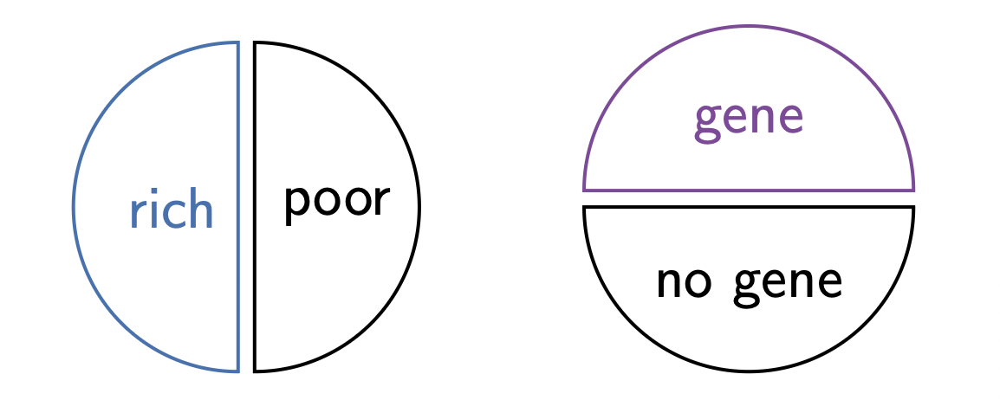
여기서 핵심은 “부유함(rich)”과 “유전자(gene)”가 서로 독립이라는 점입니다. 모집단은 다음 세 그룹으로 나뉩니다.
- \(\text{rich}\) : 무조건 생존 (alive anyways)
- \(\text{poor}_1\) : 유전자 없음 → 무조건 사망 (die anyways)
- \(\text{poor}_2\) : 유전자 있음 → 약을 먹으면 사망 (die iff taking the drug)
확률 구조는 \(P(\text{rich}) = P(\text{poor})\), \(P(\text{poor}_1) = P(\text{poor}_2)\) 입니다.
2.1.2 현행 프로토콜 — 할당 메커니즘 (Current Protocol — Assignment Mechanism)
약은 비싸기 때문에, 현재 의사들은 부자에게만, 그리고 모든 부자에게 약을 처방합니다.
- \(\text{rich} \to\) 약 처방
- \(\text{poor} \to\) 약 미처방
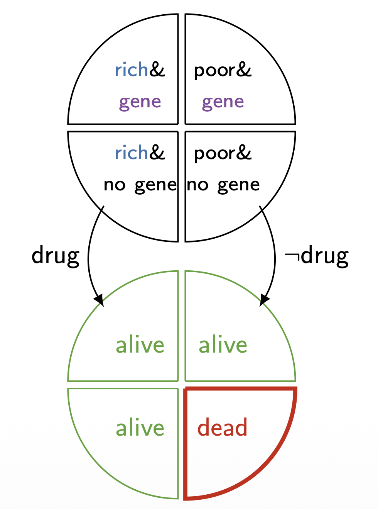
관측된 결과는 다음과 같습니다. \[ P(\text{alive} \mid \text{drug}) = 1, \qquad P(\text{alive} \mid \neg\text{drug}) = 0.5. \]
데이터만 보면 약이 생존에 결정적으로 기여하는 것처럼 보입니다. 그래서 자연스러운 질문이 떠오릅니다.
Q. 약이 이로워 보이니, 도시가 모두에게 무료로 나눠 줘야 할까요?
2.1.3 새로운 할당 메커니즘 — 모두에게(또는 아무에게도) (New Assignment Mechanism)
이제 가상의 두 세계, “모두에게 약(Drug for All)”과 “아무에게도 약 없음(Drug for None)”을 비교해 봅니다.
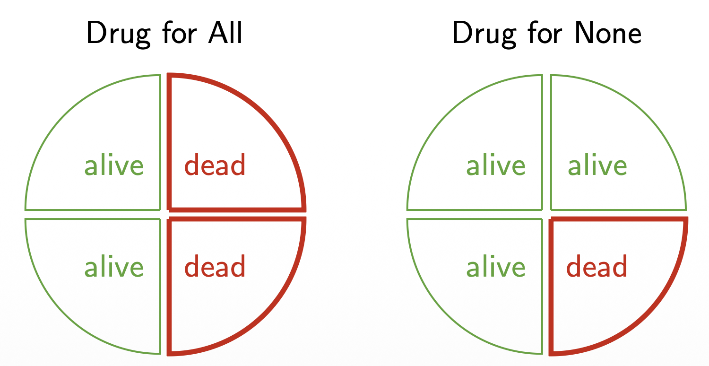
놀랍게도, 모두에게 약을 주면 유전자를 가진 빈자들이 약 때문에 사망하므로 결과가 더 나빠집니다. 오히려 아무에게도 주지 않는 편이 낫습니다. 데이터가 시사하는 직관과 정반대의 결론입니다.
2.1.4 데이터만으로 옳은 결정을 내릴 수 있는가? (Can we decide from data alone?)
AI 의사결정 시스템이 사용할 수 있는 정보는 관측 데이터, 즉 결합분포 \(P(R, D, A)\) 뿐입니다.
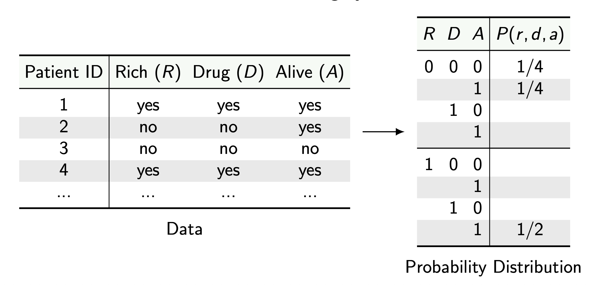
그렇다면 결정적인 질문입니다.
이 데이터만으로 옳은/최적의 답을 학습하는 알고리즘(Decision Tree, SVM, DNN 등)이 존재할까요?
답은 “불가능하다” 입니다. 왜냐하면 데이터에는 다음과 같은 관측되지 않는(exogenous) 변동이 빠져 있기 때문입니다.
- 알레르기 유전자를 가질 확률 \(P(\text{gene})\)
- 부유함에 영향을 주는 다른 요인들
- 유전자가 부·약·반응과 어떻게 상호작용하는지 에 대한 메커니즘
즉, 무엇이 무엇을 야기하는가(mechanism) 에 대한 정보가 데이터에는 인코딩되어 있지 않습니다.
2.1.5 전통적 통계-ML 추론 패러다임 (Traditional Stats-ML Paradigm)
전통적 통계·머신러닝의 접근은 “데이터의 좋은 표현(representation)을 찾는 것” 입니다.
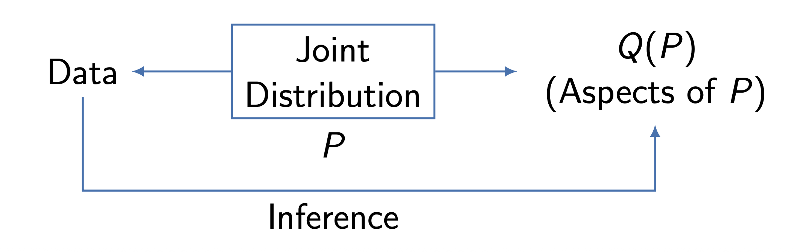
여기서 추론의 대상 \(Q(P)\) 는 항상 하나의 분포 \(P\) 의 측면입니다. 예: \(Q = P(B \mid A)\) (“A를 산 고객이 B도 살 확률”).
2.1.6 통계적 분석에서 인과적 분석으로 (From Statistical to Causal Analysis)
그런데 우리가 정말 던지고 싶은 질문은 다음과 같은 종류입니다.
- 가격을 두 배로 올리면 매출 \(P'(\text{sales})\) 는 어떻게 변할까?
- 흡연을 금지하면 암 발생 \(P'(\text{cancer})\) 는 어떻게 변할까?
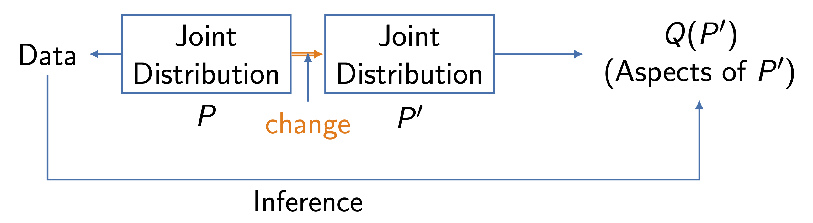
핵심 문제는 다음과 같습니다.
Q. 사실적 분포 \(P\) 가 가상의 분포 \(P'\) 로 어떻게 변하는가?
여기서 결정적 어려움은 \(P'\) 에는 데이터가 없다 는 점입니다(\(P\) 는 데이터와 연결되어 있지만, \(P'\) 은 한 번도 관측된 적 없는 세계입니다). 따라서 \(P\) 와 \(P'\) 를 모두 표현할 수 있는 새로운 형식론이 필요합니다.
2.1.7 새로운 오라클 — 구조적 인과 모델 패러다임 (New Oracle — SCM Paradigm)
그 새로운 형식론이 바로 데이터 생성 모델(Data Generating Model) \(\mathcal{M}\) 입니다.
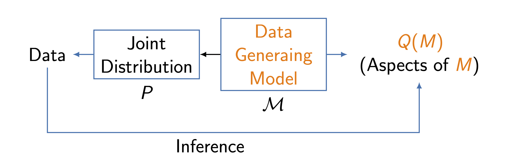
여기서 \(\mathcal{M}\) 은 자연(Nature)이 변수에 값을 할당하는 불변의 전략(invariant strategy) — 메커니즘, 레시피, 법칙, 프로토콜 — 을 의미합니다. 정리하면,
- \(P\) — 데이터의 모델
- \(\mathcal{M}\) — 현실(reality) 의 모델
2.1.8 큰 그림으로 돌아가기 (Back to Big Picture)
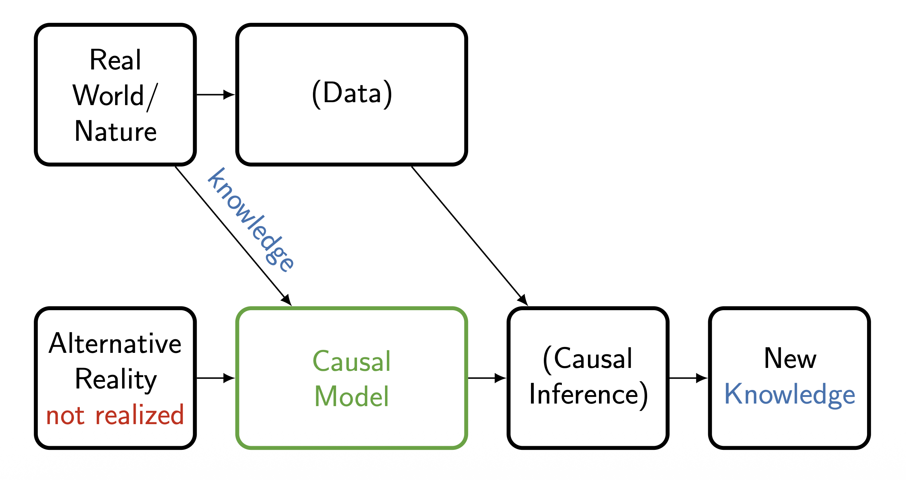
요컨대 인과 모델은 데이터에 없는 우리의 지식·가정을 형식적으로 주입하는 장치이며, 이를 통해 비로소 “실현되지 않은 대안 현실”까지 추론할 수 있게 됩니다.
2.1.9 우리 예시에서 현실 모델링하기 (Modeling Reality in our Example)
이제 약-생존 예시를 명시적인 모델로 적어 봅니다.
- 관측 변수(Observed, \(\mathbf{V}\)):
- \(R\) : (\(R=1\) 부유, \(R=0\) 가난)
- \(D\) : (\(D=1\) 약 복용)
- \(A\) : (\(A=1\) 생존)
- 비관측 변수(Unobserved, \(\mathbf{U}\)):
- \(U_G\) : (\(U_G=1\) 유전자 보유, \(=0\) 아니면)
- \(U_R\) : (부유함에 영향을 주는 기타 요인)
관측 변수가 결정되는 방식(구조 방정식)은 다음과 같습니다. \[ R \leftarrow U_R, \qquad D \leftarrow R, \qquad A \leftarrow R \vee (U_G \wedge \neg D). \]
- 부유하면 (\(R=1\)) 항상 생존합니다.
- 빈자는 유전자를 가지고 있고(\(U_G=1\)) 약을 먹지 않을 때만(\(\neg D\)) 생존합니다.
비관측 변수에 대한 불확실성(분포)은 \[ P(U_G = 1) = \tfrac{1}{2}, \quad P(U_R = 1) = \tfrac{1}{2}, \qquad P(\mathbf{U}) = P(U_G)\,P(U_R). \]
이것이 바로 완전히 명세된 현실의 모델입니다. 이 모델은 \(P\) 와 \(P'\) 을 둘 다 함의하며, 우리의 새로운 만능 오라클 — 즉 구조적 인과 모델(Structural Causal Model) — 이 됩니다. 이제 이 객체를 일반화해 봅시다.
2.2 구조적 인과 모델 (Structural Causal Model)
2.2.1 정의 (Definition)
구조적 인과 모델(SCM) \(\mathcal{M}\) 은 4-튜플 \(\langle \mathbf{V}, \mathbf{U}, \mathcal{F}, P(\mathbf{U}) \rangle\) 이며, 각 성분은 다음과 같습니다.
- \(\mathbf{V} = \{V_1, \dots, V_n\}\) : 내생 변수(endogenous variables) — 우리가 모델 내부에서 설명하려는 변수.
- \(\mathbf{U}\) : 외생 변수(exogenous variables) 의 집합 — 모델 외부에서 주어지는, 보통 관측되지 않는 변수.
- \(\mathcal{F} = \{f_1, \dots, f_n\}\) : 각 내생 변수 \(V_i\) 의 값을 결정하는 함수들. \[ v_i \leftarrow f_i(\mathbf{pa}_i, \mathbf{u}_i), \qquad \mathbf{Pa}_i \subseteq \mathbf{V} \setminus \{V_i\}, \quad \mathbf{U}_i \subseteq \mathbf{U}. \]
- \(P(\mathbf{U})\) : 외생 변수에 대한 확률분포.
여기서 화살표 \(\leftarrow\) 는 등호(=)가 아니라 할당(assignment) 임에 유의하세요. 즉 \(v_i \leftarrow f_i(\cdot)\) 는 “\(V_i\) 의 값은 그 부모와 외생 변수에 의해 결정된다”는 비대칭적(인과적) 관계를 표현합니다. 이 정의의 공리적 특성화는 Galles and Pearl [1998], Halpern [1998]에서 다룹니다.
직관적으로, SCM은 각 변수마다 “이 변수는 누구의 영향을 받아 어떻게 정해지는가”를 하나의 함수로 적어 둔 것 이며, 유일하게 무작위성이 들어오는 곳은 외생 변수의 분포 \(P(\mathbf{U})\) 입니다.
이제 이 SCM 객체가 가지는 세 가지 핵심 성질(Property 1, 2, 3)을 차례로 살펴봅니다.
2.2.2 Property 1: SCM은 관측 분포 \(P(\mathbf{v})\) 를 유도한다
- 함수 집합 \(\mathcal{F}\) 는 외생 변수에서 내생 변수로의 사상(mapping) \(\mathbf{U} \longrightarrow \mathbf{V}\) 로 볼 수 있습니다: \(\mathcal{F}_{\mathbf{u}} \mapsto \{v_1, v_2, \dots, v_n\}\).
- 입력 \(\mathbf{U}\) 가 확률 변수들의 집합이면, 그 출력 \(\mathbf{V}\) 역시 확률 변수들의 집합이 됩니다(랜덤성이 \(\mathbf{U}\) 에서 \(\mathbf{V}\) 로 전파).
- 이렇게 얻어진 \(P(\mathbf{v})\) 는 Pearl의 인과 위계(PCH)의 1층, 즉 관측(observational) 분포 (수동적·비실험적 분포)입니다.
- 각 사건·사람·관측은 외생 변수의 한 실현값 \(\mathbf{U} = \mathbf{u}\) 에 대응합니다.
SCM \(\mathcal{M} = \langle \mathbf{V}, \mathbf{U}, \mathcal{F}, P(\mathbf{U}) \rangle\) 는 임의의 부분집합 \(\mathbf{Y} \subseteq \mathbf{V}\) 에 대해 다음과 같은 결합분포 \(P_{\mathcal{M}}(\mathbf{V})\) 를 정의합니다. \[ P_{\mathcal{M}}(\mathbf{y}) = \sum_{\mathbf{u} \,\mid\, \mathbf{Y}(\mathbf{u}) = \mathbf{y}} P(\mathbf{u}). \]
여기서 \(\mathbf{Y}(\mathbf{u})\) 는 외생 값 \(\mathbf{u}\) 가 주어졌을 때 \(\mathbf{Y}\) 가 취하는 잠재 반응(potential response) 입니다. 즉 “결과가 \(\mathbf{y}\) 가 되도록 만드는 모든 외생 시나리오 \(\mathbf{u}\) 의 확률을 더한 것” 이 곧 \(P_{\mathcal{M}}(\mathbf{y})\) 입니다.
예시로 확인하기
우리 예시에서 각 시민은 외생 값 \((U_R, U_G)\) 에 따라 4개 그룹 중 하나에 속합니다.
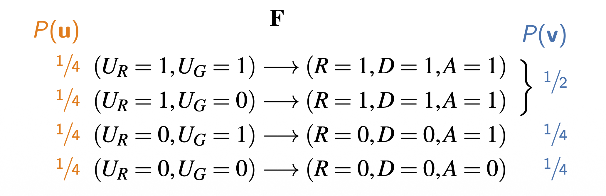
구체적으로 사상 \(\mathcal{F}\) 는 다음과 같습니다. \[ \begin{aligned} (U_R = 1, U_G = 1) &\longrightarrow (R = 1, D = 1, A = 1) \\ (U_R = 1, U_G = 0) &\longrightarrow (R = 1, D = 1, A = 1) \\ (U_R = 0, U_G = 1) &\longrightarrow (R = 0, D = 0, A = 1) \\ (U_R = 0, U_G = 0) &\longrightarrow (R = 0, D = 0, A = 0) \end{aligned} \]
각 외생 시나리오의 확률은 \(P(\mathbf{u}) = 1/4\) 로 같으므로, 결과별로 묶어 더하면 \[ P(R{=}1, D{=}1, A{=}1) = \tfrac{1}{4} + \tfrac{1}{4} = \tfrac{1}{2}, \quad P(R{=}0,D{=}0,A{=}1) = \tfrac{1}{4}, \quad P(R{=}0,D{=}0,A{=}0) = \tfrac{1}{4}. \] 이렇게 SCM 하나가 곧바로 관측 분포 \(P(\mathbf{v})\) 를 결정함을 확인할 수 있습니다.
2.2.3 Property 2: SCM은 인과 다이어그램을 유도한다
모든 SCM \(\mathcal{M}\) 은 인과 다이어그램(causal diagram) 을 유도하며, 이는 유향 비순환 그래프(Directed Acyclic Graph, DAG) 로 표현됩니다.
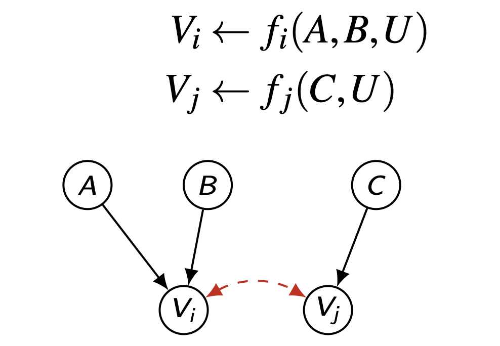
구성 규칙은 다음과 같습니다.
- 각 \(V_i \in \mathbf{V}\) 는 하나의 노드(정점) 가 됩니다.
- 모든 \(B \in \mathbf{Pa}_i\) 에 대해 유향 간선 \(B \to V_i\) 를 긋습니다.
- \(U_i \not\perp\!\!\!\perp U_j\) (외생 변수가 독립이 아닐 때)마다 양방향 간선 \(V_i \leftrightarrow V_j\) 를 긋습니다.
- 더 정확히는, 양방향 간선이 전혀 없는 임의의 정점 집합 \(\mathbf{W}\) 에 대해 \(\{U_W\}_{W \in \mathbf{W}}\) 가 결합 독립(jointly independent) 이어야 합니다.
SCM \(\mathcal{M} = \langle \mathbf{V}, \mathbf{U}, \mathcal{F}, P(\mathbf{U}) \rangle\) 에 대해, 다음과 같이 구성된 \(\mathcal{G}\) 를 \(\mathcal{M}\) 의 인과 다이어그램이라 합니다.
- 모든 내생 변수 \(V_i \in \mathbf{V}\) 에 대해 정점을 추가합니다.
- \(V_j\) 가 \(f_i \in \mathcal{F}\) 의 인자로 등장하면 간선 \(V_j \to V_i\) 를 추가합니다.
- \(U_i, U_j \subseteq \mathbf{U}\) 가 상관되어 있거나 함수 \(f_i, f_j\) 가 어떤 \(U \in \mathbf{U}\) 를 공유하면, 양방향 간선 \(V_j \leftrightarrow V_i\) 를 추가합니다.
예시 1: 의료 예시의 인과 다이어그램
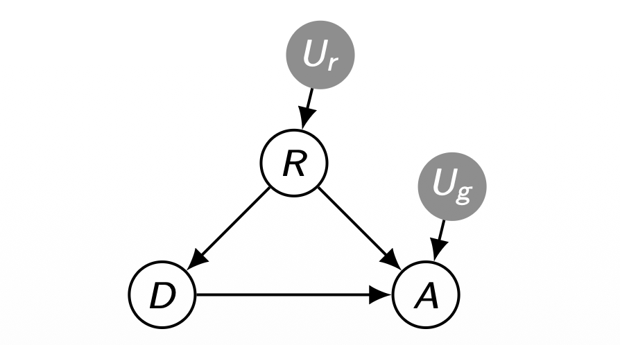
예시 2: 흡연-암 예시
- \(\mathbf{V} = \{\text{Smoking}, \text{Cancer}\}\), \(\mathbf{U} = \{U_S, U_C, U_G\}\)
- 구조 방정식: \[ \text{Smoking} \leftarrow f_{\text{Smoking}}(U_S, U_G), \qquad \text{Cancer} \leftarrow f_{\text{Cancer}}(\text{Smoking}, U_C, U_G). \]
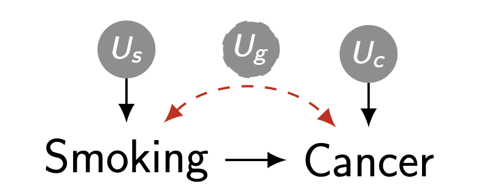
- Remark 1. 이 사상은 한 방향(SCM → 인과 다이어그램)뿐 입니다. 동일한 그래프는 같은 범위(scope, 즉 같은 함수 시그니처와 호환되는 외생 분포)를 갖는 무한히 많은 SCM 과 양립합니다.
- Remark 2. 이 관찰은 인과추론의 핵심입니다. 현실에서 연구자는 함수의 범위(누가 누구의 인자인가) 는 알 수 있어도, 그 구체적 메커니즘까지는 모르는 경우가 대부분이기 때문입니다.
표기 관례: 외생 변수는 암묵적으로 생략
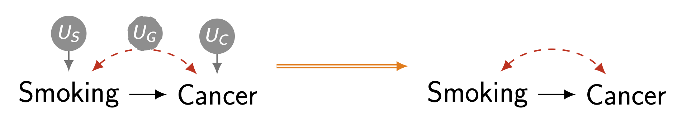
관례. 외생 변수는 그래프에서 암묵적으로 둡니다. 한 변수에만 영향을 주는 외생 변수는 생략하고, 둘 이상이 공유하는 외생 변수는 양방향 점선 간선 \(\leftrightarrow\) 으로 남깁니다.
인과 다이어그램 — 용어 (Terminology)
그래프 \(\mathcal{G}\) 는 정점 집합 \(\mathbf{V}\) 와 간선 집합 \(\mathbf{E}\) 의 쌍 \(\langle \mathbf{V}, \mathbf{E} \rangle\) 로 정의됩니다. (노드(node)와 정점(vertex)은 혼용합니다.) 임의의 \(V \in \mathbf{V}\) 에 대해:
- 부모(Parents): \(\{W \mid W \to V \in \mathcal{G}\}\) — \(V\) 로 화살표를 보내는 노드.
- 자식(Children): \(\{W \mid V \to W \in \mathcal{G}\}\) — \(V\) 가 화살표를 보내는 노드.
- 조상(Ancestors): \(\{W \mid W \to \cdots \to V \in \mathcal{G}\}\) — \(V\) 로 가는 유향 경로의 출발점들 (길이 0 포함, 즉 자기 자신 포함).
- 자손(Descendants): \(\{W \mid V \to \cdots \to W \in \mathcal{G}\}\) — \(V\) 에서 도달 가능한 노드들 (길이 0 포함).
- 형제(Siblings): \(\{W \mid W \leftrightarrow V \in \mathcal{G}\}\) — 양방향 간선으로 연결된 노드.
- 경로(path): 서로 다른 정점들을 잇는 간선들의 수열.
- 유향 경로(directed path): \(W\) 에서 \(V\) 로 가는 경로 중 모든 화살촉이 진행 방향(\(V\) 쪽)을 향하는 경로.
2.2.4 Property 3: SCM은 Pearl의 인과 위계를 함의한다
SCM은 단지 관측 분포만 유도하는 것이 아니라, 인과적 질문의 위계 전체 를 함의합니다.
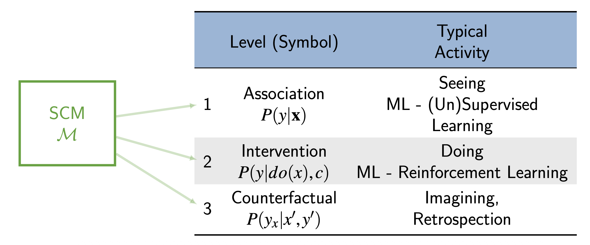
| Level (Symbol) | Typical Activity |
|---|---|
| 1. Association \(P(y \mid \mathbf{x})\) | Seeing — ML (Un)Supervised Learning |
| 2. Intervention \(P(y \mid do(x), c)\) | Doing — ML Reinforcement Learning |
| 3. Counterfactual \(P(y_x \mid x', y')\) | Imagining, Retrospection |
이번 강의에서는 일단 1층(연관)에만 집중 합니다.
인과 위계의 1층 — 연관 (1st Layer: Associations)
“내가 \(X = x\) 를 본다면 어떻게 되는가?” — 이것이 1층 연관의 질문입니다.
1층의 발생 (The Emergence of the First Layer)
\(\mathcal{M}\) 은 관측 변수 \(\mathbf{V}\) 에 대한 확률분포 \(P(V_1, \dots, V_n)\) 을 유도하며, 이를 외생 변수에 대해 주변화하여 적을 수 있습니다. \[ P(\mathbf{v}) = \sum_{\mathbf{u}} P(\mathbf{V} = \mathbf{v}, \mathbf{U} = \mathbf{u}) = \sum_{\mathbf{u}} P\Big( \underbrace{\forall_{V_i \in \mathbf{V}}\; f_i(\mathbf{pa}_i, \mathbf{u}_i) = v_i}_{\mathbf{v} \text{ 가 실현되는 사건}},\; \mathbf{U} = \mathbf{u} \Big), \] 여기서 \(\mathbf{pa}_i, \mathbf{u}_i\) 는 \(f_i\) 의 관측·비관측 인자(의 값)이며, 이들은 인과 다이어그램 \(\mathcal{G}\) 에서 \(V_i\) 의 부모와 일치합니다.
- 의료 예시: \(\displaystyle P(r, d, a) = \sum_{u_R, u_G} P(r, d, a, u_R, u_G)\)
- 흡연 예시: \(\displaystyle P(s, c) = \sum_{u_S, u_G, u_C} P(s, c, u_S, u_G, u_C)\)
이 분포를 관측 분포(observational distribution), 또는 수동적(passive)·비실험적(non-experimental) 분포라고 부릅니다.
다이어그램이 인코딩하는 것 — 위상 정렬 (Topological Order)
\(\mathcal{G}\) 가 DAG이므로, 모든 변수가 자신의 부모보다 뒤에 오는 위상 정렬(topological order) 이 존재합니다. 즉 \(\mathbf{Pa}_i \prec V_i\) (기호 \(\prec\) 는 “선행한다”는 뜻).
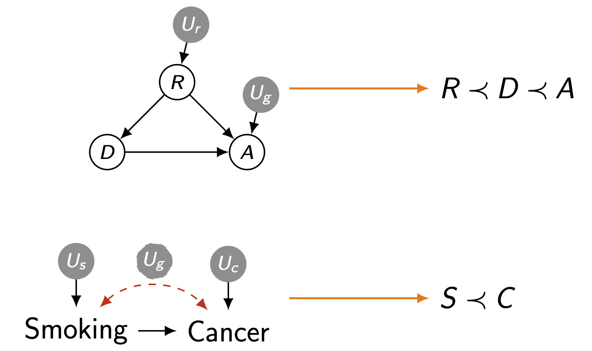
다이어그램이 인코딩하는 것 — 인수분해
이제 핵심 유도입니다. \(\mathcal{M}\) 이 유도하는 \(P(\mathbf{V})\) 를 위상 정렬을 따라 연쇄 규칙으로 분해합니다.
1단계. 외생 변수에 대한 주변화: \[ P(\mathbf{v}) = \sum_{\mathbf{u}} P(\mathbf{v}, \mathbf{u}). \]
2단계. 연쇄 규칙을 위상 정렬 순서로 적용: \[ P(\mathbf{v}) = \sum_{\mathbf{u}} P(\mathbf{u}) \prod_{V_i \in \mathbf{V}} P(v_i \mid v_1, \dots, v_{i-1}, \mathbf{u}). \]
3단계 (핵심). 관측 변수 \(V_i\) 는 그 관측·비관측 부모에 의해 완전히 결정되며, \(\mathbf{Pa}_i \cup \mathbf{U}_i \subseteq \{V_1, \dots, V_{i-1}\} \cup \mathbf{U}\) 이므로, 조건부에서 부모 이외의 변수는 모두 무관해집니다. \[ P(v_i \mid v_1, \dots, v_{i-1}, \mathbf{u}) = P\big( f_i(\mathbf{pa}_i, \mathbf{u}_i) = v_i \mid v_1, \dots, v_{i-1}, \mathbf{u} \big) = P(v_i \mid \mathbf{pa}_i, \mathbf{u}_i). \]
따라서 분포는 다음과 같이 분해됩니다. \[ P(\mathbf{v}) = \sum_{\mathbf{u}} P(\mathbf{u}) \prod_{V_i \in \mathbf{V}} P(v_i \mid v_1, \dots, v_{i-1}, \mathbf{u}) = \sum_{\mathbf{u}} P(\mathbf{u}) \prod_{V_i \in \mathbf{V}} P(v_i \mid \mathbf{pa}_i, \mathbf{u}_i). \]
두 예시에 적용하면: \[ P(r, d, a) = \sum_{u_R, u_G} P(u_R, u_G)\, P(r \mid u_R)\, P(d \mid r)\, P(a \mid r, d, u_G), \] \[ P(s, c) = \sum_{u_S, u_G, u_C} P(u_S, u_G, u_C)\, P(s \mid u_G, u_S)\, P(c \mid s, u_G, u_C). \]
이렇게 그래프 구조가 곧 결합분포의 인수분해 형태를 지시 한다는 것이 Property 3의 핵심 함의입니다.
2.3 조건부 독립 (Conditional Independence)
2.3.1 확률적 불변성 (Probabilistic Invariance)
변수 \(X = x\) 를 안다고 해서 \(Y = y\) 에 대한 믿음이 변하지 않으면, \(X\) 와 \(Y\) 는 확률적으로 독립 이라 하고 \(X \perp\!\!\!\perp Y\) 로 씁니다. \[ X \perp\!\!\!\perp Y \iff P(Y = y \mid X = x) = P(Y = y) \quad\therefore\quad P(y, x) = P(y)\,P(x). \]
더 일반적으로, 제3의 변수 \(Z = z\) 를 이미 알고 있을 때 추가로 \(X = x\) 를 알아도 \(Y = y\) 에 대한 믿음이 변하지 않으면, \(X\) 와 \(Y\) 는 \(Z\) 가 주어졌을 때 조건부 독립 이며 \((X \perp\!\!\!\perp Y \mid Z)\) 로 씁니다. \[ X \perp\!\!\!\perp Y \mid Z \iff P(X = x \mid Z = z, Y = y) = P(X = x \mid Z = z). \]
이것들은 모두 분포 \(P(\mathbf{V})\) 에 대한 제약(property/constraint) 입니다.
핵심 직관: 함수적 의존의 부재 \(\longrightarrow\) 확률적 독립. (구조 방정식에서 어떤 변수가 인자로 등장하지 않으면, 그 변수에 대한 확률적 독립이 따라옵니다.)
2.3.2 그래프 \(\mathcal{G}\) 가 분포 \(P\) 의 조건부 독립을 함의한다
위상 정렬에서 우리는 이미 \(P(v_i \mid v_1, \dots, v_{i-1}, \mathbf{u}) = P(v_i \mid \mathbf{pa}_i, \mathbf{u}_i)\) 임을 보았습니다. 그렇다면 자연스러운 질문은 다음과 같습니다.
위상 정렬에서 \(\{V_1, \dots, V_{i-1}\}\) 로 올 수 있는 최대 집합 은 무엇인가?
이 집합은 \(V_i \to \cdots \to W\) 형태의 유향 경로가 없는 모든 변수 \(W\) 를 포함할 수 있습니다. 즉 \(V_i\) 의 모든 비자손(non-descendants) 이며, 이를 \(\mathbf{Nd}_i\) 로 표기합니다.
따라서 \[ P(v_i \mid \mathbf{pa}_i, \mathbf{u}_i) = P(v_i \mid v_1, \dots, v_{i-1}, \mathbf{u}) = P(v_i \mid \mathbf{nd}_i, \mathbf{u}), \] 이는 다음의 조건부 독립에 대응합니다. \[ \boxed{\; V_i \perp\!\!\!\perp \mathbf{Nd}_i \setminus \mathbf{Pa}_i,\; \mathbf{U} \setminus \mathbf{U}_i \;\Big|\; \mathbf{Pa}_i,\, \mathbf{U}_i \;} \] 해석: 부모(와 자신의 외생 변수)를 알면, \(V_i\) 는 자신의 비자손 중 부모가 아닌 나머지와 (그리고 자신과 무관한 외생 변수들과) 독립입니다.
2.4 마르코프 조건 (Markovian Condition)
외생 변수 \(U_1, \dots, U_n \subseteq \mathbf{U}\) 가 서로 결합 독립(즉 \(\mathcal{G}\) 에 양방향 간선이 하나도 없음)이면, 그 모델을 마르코프적(Markovian) 이라 부릅니다. 이때 분포는 다음과 같이 깔끔하게 인수분해됩니다.
\[ \begin{aligned} P(\mathbf{v}) &= \sum_{\mathbf{u}} P(\mathbf{u}) \prod_{V_i \in \mathbf{V}} P(v_i \mid \mathbf{pa}_i, \mathbf{u}_i) \\[4pt] &= \sum_{\mathbf{u}} \prod_{V_i \in \mathbf{V}} P(v_i \mid \mathbf{pa}_i, \mathbf{u}_i)\, P(u_i) && \big(\text{결합 독립} \Rightarrow P(\mathbf{u}) = \textstyle\prod_i P(u_i)\big) \\[4pt] &= \sum_{\mathbf{u}} \prod_{V_i \in \mathbf{V}} P(v_i \mid \mathbf{pa}_i, \mathbf{u}_i)\, P(u_i \mid \mathbf{pa}_i) && \big(U_i \text{ 는 } \mathbf{pa}_i \text{ 와 독립}\big) \\[4pt] &= \sum_{\mathbf{u}} \prod_{V_i \in \mathbf{V}} P(v_i, u_i \mid \mathbf{pa}_i) && (\text{곱셈 규칙으로 결합}) \\[4pt] &= \prod_{V_i \in \mathbf{V}} \sum_{u_i} P(v_i, u_i \mid \mathbf{pa}_i) && (\text{합과 곱의 교환: } \S 1.3) \\[4pt] &= \prod_{V_i \in \mathbf{V}} P(v_i \mid \mathbf{pa}_i). \end{aligned} \]
- 마지막 결과 \(P(\mathbf{v}) = \prod_{V_i} P(v_i \mid \mathbf{pa}_i)\) 가 바로 베이지안 인수분해(Bayesian Factorization) 입니다.
- 이는 곧 국소 마르코프 조건(Local Markovian Condition) \(\big(V_i \perp\!\!\!\perp \mathbf{Nd}_i \setminus \mathbf{Pa}_i \mid \mathbf{Pa}_i\big)\) 과 동치입니다.
세 번째 줄의 핵심은 외생 변수 \(U_i\) 가 그 자식 \(V_i\) 의 부모 \(\mathbf{pa}_i\) 와 독립이라는 점(\(P(u_i) = P(u_i \mid \mathbf{pa}_i)\))이며, 다섯 번째 줄에서는 §1.3에서 익힌 “합과 곱의 교환” 트릭(각 인자가 자신과 무관한 합 밖으로 나갈 수 있음)이 그대로 쓰입니다. 마르코프 가정 덕분에 비관측 외생 변수가 깔끔하게 소거되어, 관측 변수만의 부모-자식 조건부 곱으로 결합분포가 표현됩니다.
2.5 그래프 분리 (Graph Separation, d-separation)
이 절은 “비관측 세계와 관측 세계를 연결하기”, 즉 마르코프 조건의 함의를 다룹니다.
이제 그래프 구조만 보고 어떤 조건부 독립이 성립하는지를 읽어내는 방법을 배웁니다. 출발점은 세 가지 기본 구조 — 인과 연쇄(chain), 공통 원인(common cause), 공통 결과(common effect) — 입니다.
2.5.1 인과 연쇄 (Causal Chains) — \(X \to Z \to Y\)
수능-입시 예시로 봅니다: \(X\)(좋은 공부 습관) \(\to Z\)(높은 수능 점수) \(\to Y\)(대학 합격). 구조 방정식은 \[ X \leftarrow U_X, \qquad Z \leftarrow X \vee \neg U_Z, \qquad Y \leftarrow Z \wedge U_Y. \]
(a) \(X\) 와 \(Y\) 는 (주변적으로) 독립인가? → 아니오
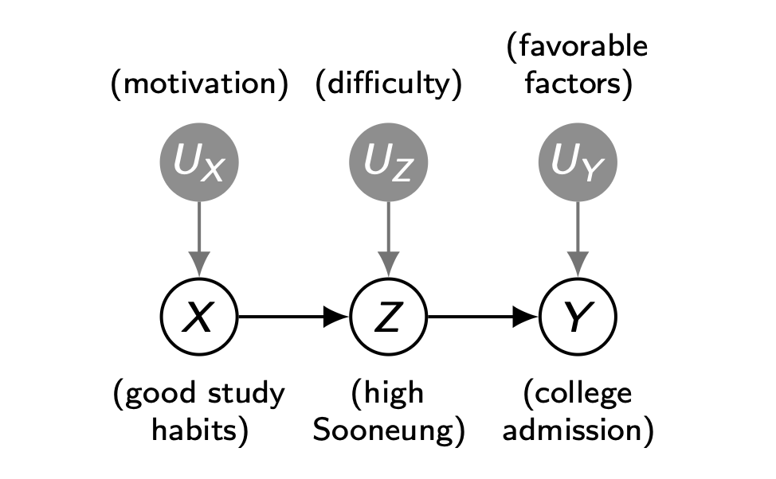
결합 확률을 \(Z\) 에 대해 주변화하면 (그래프 구조를 따라 분해): \[ P(X{=}1, Y{=}1) = \sum_z P(X{=}1)\,P(z \mid X{=}1)\,P(Y{=}1 \mid z) = P(X{=}1) \sum_z P(z \mid X{=}1)\,P(Y{=}1 \mid z) = P(U_X{=}1)\,P(U_Y{=}1). \] 반면 독립을 가정한 곱은 \[ P(X{=}1)\,P(Y{=}1) = P(U_X{=}1)\,P(U_Y{=}1)\big(P(U_X{=}0)P(U_Z{=}0) + P(U_X{=}1)\big). \] 두 값이 일반적으로 다르므로 \(X \not\perp\!\!\!\perp Y\) 입니다. 그래프적으로는 정보가 \(X\) 에서 \(Z\) 를 통해 \(Y\) 로 흐릅니다.
(b) \(Z\) 가 주어졌을 때 \(X\) 와 \(Y\) 는 독립인가? → 예
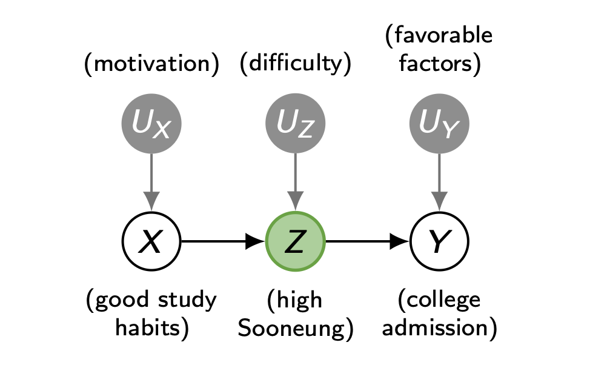
조건부 결합을 전개하면 (분해 \(P(x,y,z) = P(y \mid z) P(z \mid x) P(x)\) 이용): \[ P(x, y \mid z) = \frac{P(x, y, z)}{P(z)} = \frac{P(y \mid z)\,P(z \mid x)\,P(x)}{P(z)} = \frac{P(x, z)}{P(z)}\,P(y \mid z) = P(x \mid z)\,P(y \mid z). \] 따라서 \(X \perp\!\!\!\perp Y \mid Z\). 그래프적으로 \(Z\) 를 관측하면 \(X \to Y\) 영향이 차단됩니다.
2.5.2 공통 원인 (Common Cause) — \(X \leftarrow Z \to Y\)
교통 예시: \(Z\)(비) \(\to X\)(교통 혼잡), \(Z\)(비) \(\to Y\)(우산 사용). 구조 방정식은 \[ Z \leftarrow U_Z, \qquad X \leftarrow Z \vee \neg U_X, \qquad Y \leftarrow Z \wedge U_Y. \]
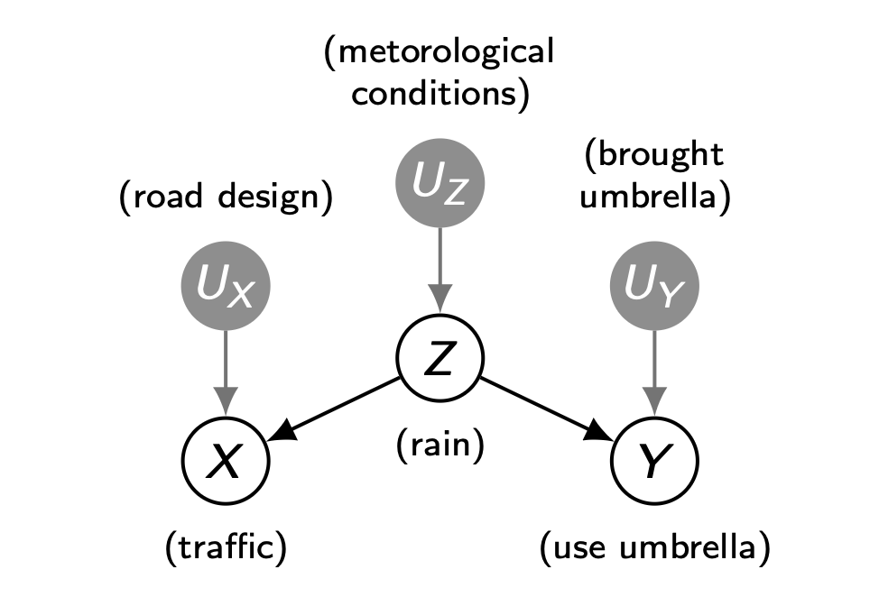
(a) \(X\) 와 \(Y\) 는 독립인가? → 아니오
우산을 든 사람(\(Y=1\))을 보면 비(\(Z=1\))일 확률이 올라가고, 이는 교통 혼잡(\(X=1\)) 가능성을 높입니다. 즉 \(\exists_{x,y}\, P(x, y) \neq P(x)\,P(y)\). 정보가 공통 원인 \(Z\) 를 통해 \(Y \to X\) 로 흐릅니다.
(b) \(Z\) 가 주어졌을 때 \(X\) 와 \(Y\) 는 독립인가? → 예
비가 온다(\(Z=1\))는 것을 이미 알면, 우산을 든 사람(\(Y=1\))을 봐도 교통(\(X\))에 대해 추가 정보를 주지 못합니다. \[ P(x, y \mid z) = \frac{P(x, y, z)}{P(z)} = \frac{P(x \mid z)\,P(y \mid z)\,P(z)}{P(z)} = P(x \mid z)\,P(y \mid z). \] 따라서 \(X \perp\!\!\!\perp Y \mid Z\). 공통 원인 \(Z\) 를 관측하면 경로가 차단됩니다. (연쇄와 마찬가지로, 비관측 시 활성·관측 시 차단입니다.)
2.5.3 공통 결과 (Common Effect, Collider) — \(X \to Z \leftarrow Y\)
출석 예시: \(X\)(감기) \(\to Z\)(수업 출석) \(\leftarrow Y\)(공휴일). 구조 방정식은 \[ X \leftarrow U_X, \qquad Y \leftarrow U_Y, \qquad Z \leftarrow \neg Y \wedge (\neg X \wedge U_Z). \]
(a) \(X\) 와 \(Y\) 는 독립인가? → 예
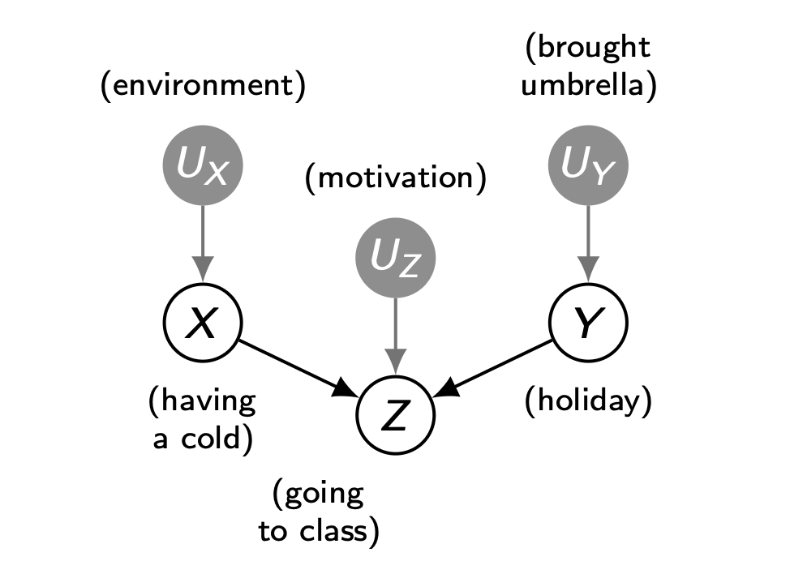
감기에 걸리는 것(\(X=1\))과 공휴일인 것(\(Y=1\))은 서로 무관합니다. \[ P(x, y) = \sum_z P(x)\,P(y)\,P(z \mid x, y) = P(x)\,P(y) \sum_z P(z \mid x, y) = P(x)\,P(y). \] 따라서 \(X \perp\!\!\!\perp Y\). 충돌점(collider) \(Z\) 를 관측하지 않으면 경로가 차단됩니다 — 앞의 두 경우와 정반대입니다.
(b) \(Z\) 가 주어졌을 때 \(X\) 와 \(Y\) 는 독립인가? → 아니오!
만약 학생이 수업에 안 왔고(\(Z=0\)) 오늘이 공휴일이 아니라면(\(Y=0\)), 그 학생은 감기에 걸렸을 가능성(\(X=1\))이 높아집니다. 즉 \(\exists_{x,y,z}\, P(x, y \mid z) \neq P(x \mid z)\,P(y \mid z)\). 충돌점을 관측하면 경로가 열립니다. (“\(X\) 의 영향이 \(Z\) 에서 다시 \(Y\) 로 튕겨 올라간다.”)
(c) 충돌점의 자손 \(W\) 가 주어졌을 때는? → 여전히 아니오!
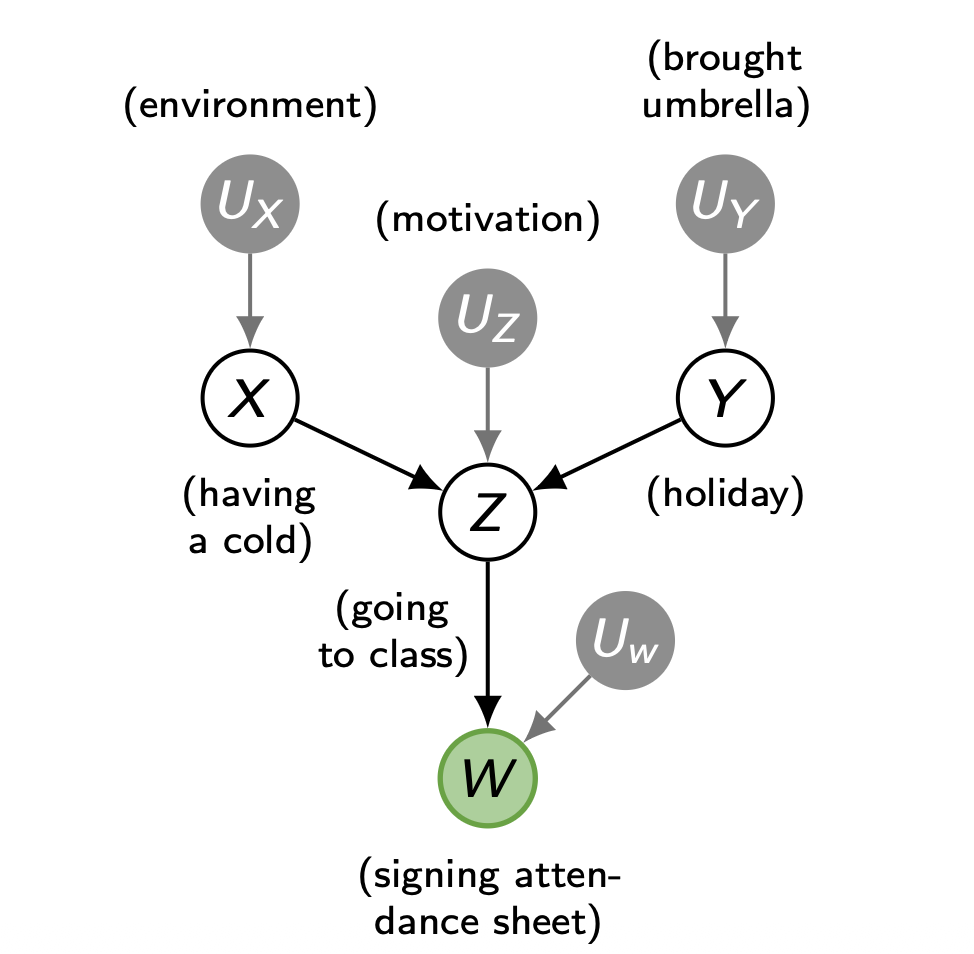
충돌점 \(Z\) 의 자손 \(W\)(출석부 서명)를 조건으로 잡아도 마찬가지입니다. \(W=0\)(서명 안 함)을 관측하면 결석(\(Z=0\)) 가능성이 올라가고, 이는 다시 \(X\) 와 \(Y\) 를 종속으로 만듭니다.
핵심 경고: 충돌점뿐 아니라 그 자손(descendants of colliders)도 조심하세요!
2.5.4 삼중쌍 요약 (Triplets — Summary)
세 가지 구조와 조건부 여부를 종합하면, 경로의 한 구간(triplet)이 활성(active) 인지 비활성(inactive) 인지를 다음과 같이 정리할 수 있습니다.
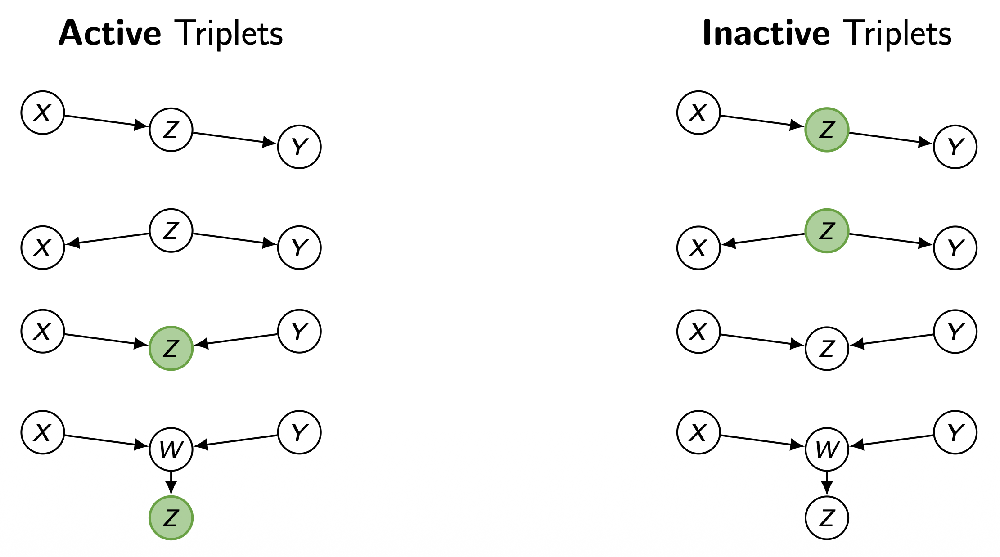
- 활성 삼중쌍 (정보가 흐름): 연쇄·공통원인에서 중간 노드를 관측하지 않을 때, 충돌에서 충돌점(또는 그 자손)을 관측할 때.
- 비활성 삼중쌍 (정보가 차단됨): 연쇄·공통원인에서 중간 노드를 관측할 때, 충돌에서 충돌점(과 자손)을 관측하지 않을 때.
이 표가 d-분리 전체를 떠받치는 국소 규칙입니다.
2.5.5 d-분리 알고리즘 (Graph Separation, d-separation)
\(X\) 와 \(Y\) 가 \(\mathbf{Z}\) 가 주어졌을 때 독립인지 판정하는 절차는 다음과 같습니다.
- 그래프에서 \(X\) 와 \(Y\) 를 잇는 모든 경로를 살핍니다.
- 한 경로는, 그 안의 모든 삼중쌍이 (\(\mathbf{Z}\) 가 주어졌을 때) 활성이면 활성 경로입니다.
- 하나라도 활성 경로가 있으면 \(X\) 와 \(Y\) 는 독립이 아닙니다.
(자명한 경우: \(X = Y\) 이거나 \(X, Y\) 가 인접하면 종속입니다. 또한 \(X, Y \notin \mathbf{Z}\) 를 가정합니다.)
예시: 스프링클러 그래프
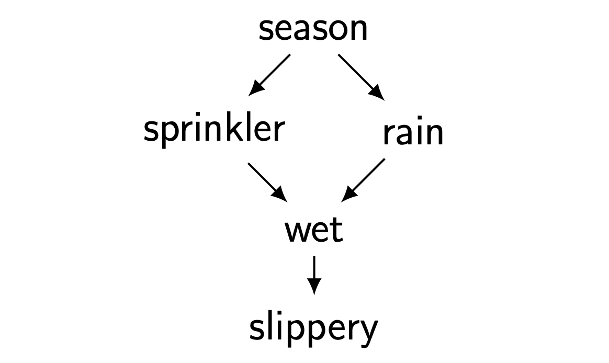
판정 결과를 음미해 봅시다.
- ✗ \((\text{Wet} \perp\!\!\!\perp \text{Sprinkler})\) — sprinkler가 wet의 직접 부모이므로 종속.
- ✗ \((\text{Wet} \perp\!\!\!\perp \text{Season} \mid \text{Sprinkler})\) — season \(\to\) rain \(\to\) wet 경로가 여전히 활성.
- ✓ \((\text{Rain} \perp\!\!\!\perp \text{Slippery} \mid \text{Wet})\) — 연쇄 rain \(\to\) wet \(\to\) slippery 가 wet 관측으로 차단.
- ✓ \((\text{Season} \perp\!\!\!\perp \text{Wet} \mid \text{Sprinkler}, \text{Rain})\) — wet의 두 부모를 모두 조건으로 잡아 모든 경로 차단.
- ✗ \((\text{Sprinkler} \perp\!\!\!\perp \text{Rain} \mid \text{Season}, \text{Wet})\) — wet은 sprinkler와 rain의 충돌점이므로, wet을 관측하면 경로가 열림.
2.5.6 구현 — 위상 정렬 (Implementation: Topological Order)
마지막으로, DAG에서 위상 정렬을 어떻게 구현하는지 봅니다. 아이디어는 다음과 같습니다.
- 노드 \(W \in \mathbf{V}\) 의 부모들은 순서상 먼저 와야 합니다.
- 그래프가 비순환이므로, 부모가 없는 소스 노드(source node) 가 반드시 존재합니다.
- DAG에서 노드(와 연결 간선)를 제거해도 여전히 DAG입니다.
- \(\Rightarrow\) 소스 노드를 찾고, 나머지 그래프에 대해 재귀적으로 순서를 구합니다.
(a) 소박한 재귀 버전 (Naïve, Recursive)
def topological_order(G):
for V in G.Vs: # 모든 노드에 대해
if not G.Pa(V): # V의 부모가 없으면 (소스 노드)
return [V] + topological_order(G - V)
return [](b) 진입 차수 기반 버전 (Kahn’s Algorithm)
def topological_order(G):
order = deque()
in_degrees = {V: len(G.Pa(V)) for V in G.Vs}
while in_degrees:
for v, v_deg in in_degrees.items():
if v_deg == 0:
break
order.append(v)
del in_degrees[v]
for c in G.Ch(v):
in_degrees[c] -= 1
return order각 노드의 진입 차수(부모 수)를 세고, 진입 차수가 0인 노드를 순서에 추가한 뒤 그 자식들의 진입 차수를 1씩 줄여 나갑니다.
(c) 비순환성 검사 추가 (Topological Order + Acyclicity)
def topological_order(G):
order = deque()
in_degrees = {V: len(G.Pa(V)) for V in G.Vs}
while in_degrees:
for v, v_deg in in_degrees.items():
if v_deg == 0:
break
else: # 진입차수 0인 노드가 하나도 없으면
raise ValueError('cyclic') # 순환 존재 → 예외
order.append(v)
del in_degrees[v]
for c in G.Ch(v):
in_degrees[c] -= 1
return orderfor ... else 구문을 활용한 점이 핵심입니다. 반복문이 break 없이 끝났다는 것은 진입 차수가 0인 노드가 하나도 없다는 뜻이고, 이는 곧 그래프에 순환(cycle)이 존재함을 의미하므로 예외를 발생시킵니다.
2.5.7 생각해 볼 거리 (Food for Thought)
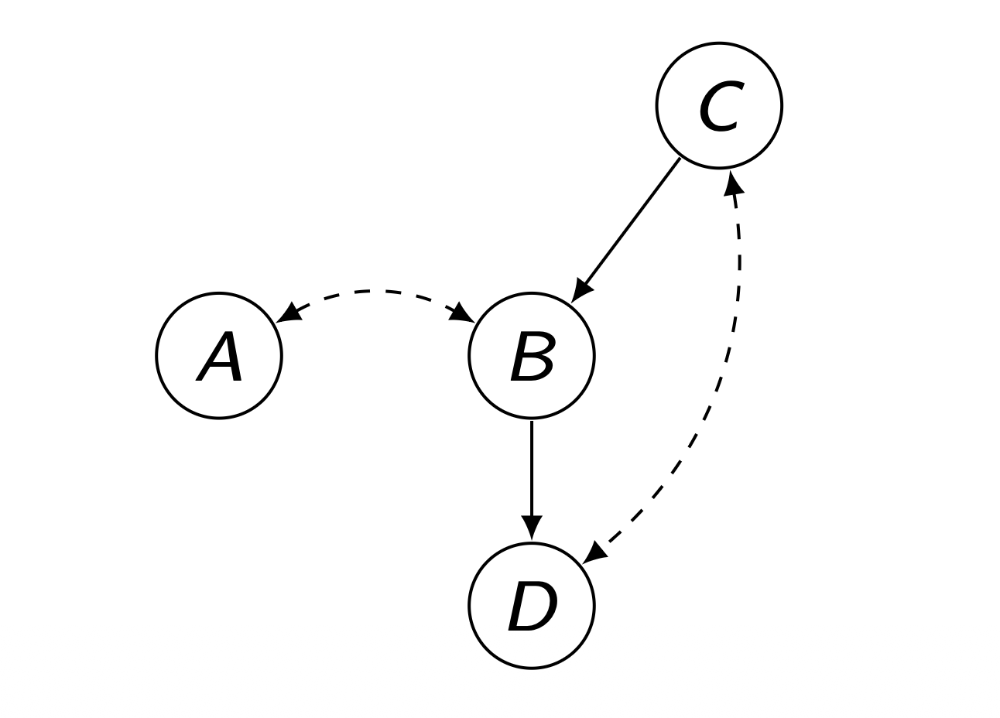
위 그래프(간선: \(A \leftrightarrow B\), \(C \to B\), \(B \to D\), \(C \leftrightarrow D\))에 대해 다음을 판정해 봅시다.
- \(A\) 와 \(D\) 는 독립인가?
- \(A\) 와 \(C\) 는 독립인가?
- \(D\) 가 주어졌을 때 \(A\) 와 \(C\) 는 독립인가?
- \(B\) 가 주어졌을 때 \(D\) 와 \(C\) 는 독립인가?
양방향 간선은 미관측 공통 원인을 의미합니다(\(A \leftrightarrow B\) 는 \(A \leftarrow U_{AB} \to B\), \(C \leftrightarrow D\) 는 \(C \leftarrow U_{CD} \to D\)).
- \(A \perp\!\!\!\perp D\)? → 아니오. 경로 \(A \leftrightarrow B \to D\) 에서 \(B\) 는 비충돌점(연쇄)이고 조건에 없으므로 활성 → 종속.
- \(A \perp\!\!\!\perp C\)? → 예. 경로 \(A \leftrightarrow B \leftarrow C\) 에서 \(B\) 는 충돌점(미관측)이라 차단되고, \(A \leftrightarrow B \to D \leftrightarrow C\) 에서 \(D\) 역시 충돌점(미관측)이라 차단 → 모든 경로 차단.
- \(A \perp\!\!\!\perp C \mid D\)? → 아니오. \(D\) 는 충돌점 \(B\) 의 자손이므로, \(D\) 를 조건으로 잡으면 \(A \leftrightarrow B \leftarrow C\) 가 활성화 → 종속.
- \(D \perp\!\!\!\perp C \mid B\)? → 아니오. \(C \leftrightarrow D\) 는 직접 간선(인접)이므로 어떤 조건에서도 종속.
참고문헌 (References)
- Judea Pearl. Causality: Models, Reasoning, and Inference. Cambridge University Press, New York, 2000.
- D. Galles and J. Pearl. An axiomatic characterization of causal counterfactuals. Foundation of Science, 3(1):151–182, 1998.
- J. Y. Halpern. Axiomatizing causal reasoning. In G. F. Cooper and S. Moral, editors, Uncertainty in Artificial Intelligence, pages 202–210. Morgan Kaufmann, San Francisco, CA, 1998.
- E. Bareinboim, J. Correa, D. Ibeling, and T. Icard. On Pearl’s hierarchy and the foundations of causal inference. Technical Report R-60, Causal Artificial Intelligence Lab, Columbia University, Jul 2020. In: Probabilistic and Causal Inference: The Works of Judea Pearl, ACM Books, in press.